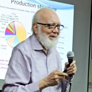

Biography
Prof. Dr. Iqbal Mahmud is one of the most distinguished figures in the history of chemical engineering education in Bangladesh. Born on 8 March 1940 in Kolkata, British India, he completed his early education at Sylhet Government High School (matriculation, 1954) and Murari Chand College, Sylhet (intermediate, 1956). He earned his Bachelor of Science in Chemical Engineering from Ahsanullah Engineering College — later to become BUET — in 1960, and subsequently obtained his Master's and PhD degrees from the University of Manchester, UK, in 1962 and 1964 respectively.
Dr. Mahmud joined the Department of Chemical Engineering at BUET as an Assistant Professor in October 1964, launching a career spanning over three and a half decades of teaching and institution-building. He rose through the ranks to full Professor and eventually served as the 7th Vice-Chancellor of BUET from November 1996 to October 1998, retiring as Professor Emeritus in September 2000. He is widely regarded as a foundational figure who shaped both the department and the broader engineering landscape of the country.
His contributions extend well beyond academia. He served as Minister of State for Agriculture and Forests (1979–1981), and played a defining role in the establishment of microfinance in Bangladesh as the inaugural Chairman of Grameen Bank (1983–1989) — the institution that would go on to win the Nobel Peace Prize in 2006. He was also a member of the Bangladesh University Grants Commission (1996–1997) and has served on the Academic Council of BRAC University. In recognition of his exceptional contributions to education, the Government of Bangladesh awarded him the Ekushey Padak in 2005 — one of the nation's highest civilian honours.
Research Interests
Education
-
1964
Doctor of Philosophy (PhD) — Chemical Engineering
University of Manchester, United Kingdom
-
1962
Master of Science (MSc) — Chemical Engineering
University of Manchester, United Kingdom
-
1960
Bachelor of Science (BSc) — Chemical Engineering
Ahsanullah Engineering College (now BUET), Dhaka, Bangladesh
Career
-
2000–
Professor Emeritus
Department of Chemical Engineering, BUET, Dhaka
-
1996–98
Vice-Chancellor (7th)
Bangladesh University of Engineering and Technology (BUET)
-
1996–97
Member, University Grants Commission (UGC)
Government of Bangladesh
-
1983–89
Founding Chairman, Grameen Bank
Dhaka, Bangladesh — First-ever Chairman of the institution
-
1979–81
Minister of State for Agriculture and Forests
Government of Bangladesh (under President Ziaur Rahman)
-
1964–2000
Assistant Professor → Associate Professor → Professor
Department of Chemical Engineering, BUET, Dhaka
Books & Selected Publications
Textbook
-
Nooruddin Ahmed & Iqbal Mahmud (2009). Corrosion Engineering: An Introductory Text.
Textbook
Bangladesh University of Engineering and Technology (BUET). ISBN 978-984-8725-08-5.
A foundational undergraduate textbook on corrosion principles and engineering, widely used across chemical and materials engineering programmes in Bangladesh.
Selected Journal & Conference Publications
- Mahmud, I. et al. "Corrosion behaviour of mild steel in industrial effluents." Journal of Chemical Engineering, IChemE Bangladesh.
- Mahmud, I. "Process design considerations for chemical plant corrosion control." Chemical Engineering Research Bulletin, BUET.
- Mahmud, I. "Engineering education in developing nations: challenges and prospects." Proceedings of the International Conference on Chemical Engineering (ICChE), BUET.
Prof. Mahmud's full publication record spans corrosion engineering, process design, and engineering education policy. For further references, contact the Department of Chemical Engineering, BUET.
Distinctions & National Service
-
🏅Ekushey Padak (2005) — Government of Bangladesh Awarded for outstanding contributions to education — one of the highest civilian honours in Bangladesh
-
🎓7th Vice-Chancellor — Bangladesh University of Engineering and Technology (BUET), 1996–1998 Led the university through a significant period of academic development and institutional reform
-
🏦Founding Chairman — Grameen Bank, 1983–1989 Served as the inaugural Chairman of Grameen Bank — the pioneering microfinance institution that was co-awarded the Nobel Peace Prize in 2006 (with founder Prof. Muhammad Yunus)
-
🌾Minister of State for Agriculture and Forests — Government of Bangladesh, 1979–1981 Served under President Ziaur Rahman, contributing to national agricultural policy during a critical developmental period
-
📋Member — Bangladesh University Grants Commission (UGC), 1996–1997 Contributed to national higher education policy and resource allocation across universities in Bangladesh
-
🏛️Member, Academic Council — BRAC University, Dhaka Continues to provide senior academic leadership and guidance to one of Bangladesh's leading private universities
-
📗Co-author — Corrosion Engineering: An Introductory Text (BUET, 2009) Co-authored with Prof. Nooruddin Ahmed (later 8th Vice-Chancellor of BUET) · Standard undergraduate reference text for corrosion engineering in Bangladesh
-
🎤Keynote Speaker — International Conference on Chemical Engineering (ICChE), BUET Invited as Professor Emeritus and Ex-Vice Chancellor to deliver keynote addresses at the flagship chemical engineering conference in Bangladesh